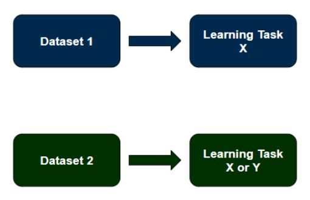

Machine Learning
Contents
Machine Learning#
Machine learning (ML), a category of artificial intelligence, is a useful tool for multiple domains but can be particularly impactful for cognitive neuroscientists and functional magnetic resonance imagining (fMRI) researchers as it enables computers to learn a task based on data given, similar to how humans learn from experience, without explicitly programming the learning task. The process allows computers to modify their actions over multiple iterations, or attempts, to improve accuracy (i.e., number of times the action produces a correct result). The machine learning process is related to Bayesian statistics, a null hypothesis statistic testing alternative which allows prior knowledge to influence the test at hand, and computational statistics, which make statistical predictions via computers. Solving a problem via traditional ML involves a model (i.e., the task to learn or problem to solve) being trained on a dataset to learn the task question at hand, and being tested on alternate but identical data (i.e., a subset of the original dataset: data of one run from each subject, or one subject, of the study used in training but not included in the training itself) (Alzubi et al. 2018). An important requirement of traditional ML is that a dataset must include the same data for the learning task (i.e., data from only one study can be used in the model).

Fig. 1 - Traditional ML allows a dataset from a single study to contribute to the model’s learning task.
Questions of Machine Learning#
Prior to solving the problem, the appropriate ML algorithm must be chosen by determining which one (or more) of the five questions data science can answer that the problem at hand fits into: classification problem (e.g., Is this A or B?), anomaly detection problem (e.g., Which is the odd one out?), regression problem (e.g., How much/many?), clustering problem (e.g., What is the structure/organization?), or a reinforcement learning problem (e.g., What should be done next?).
Classification#
The majority of cognitive neuroscience ML algorithms are classification problems in which a fixed number of output classes are determined a priori, such as Yes/No, but are not required to be binary (Alzubi et al. 2018). Some common classification problems in cognitive neuroscience are fear conditioning conditioned stimulus classification (i.e., Is the trial a feared conditioned stimulus?), percept modality classification (i.e., Is the trial viewed or imagined/viewed or heard/etc.?), and category classification (i.e., Which animal/tool/etc. is present in the trial?). Multi-voxel Pattern Analysis (MVPA) is a common fMRI traditional machine learning classification tool.
Anomaly Detection#
An anomaly detection problem detects changes or anomalies (i.e., outliers) in a pattern (Alzubi et al. 2018). For example, in cognitive neuroscience it has been used to discriminate seafarers with altered default mode network functioning from healthy controls (Shi et al. 2015).
Regression#
Regression problem algorithms handle continuous, numeric output, generally asking “How much?” or “How many?” (Alzubi et al. 2018). Cognitive fMRI researchers have used regression ML analyses for many purposes, from predicting ratings of features experienced in video games (Di Bono and Zorzi 2008) to predicting alcohol misuse based on neuropsychological profiles (Whelan et al. 2014) to predicting math abilities and associated neural mechanisms following tutoring (Supekar et al. 2013).
Clustering#
A clustering problem is one which creates clusters based on the similarity of the data structure. Due to the large number of features in fMRI data (i.e., many voxels), clustering algorithms are very commonly used to reduce the number of important features, such as independent components analysis (ICA) and principle component analysis (PCA) (Smolders et al. 2007; Liang et al. 2016), and are often used as a precursor in further machine learning algorithms (Alzubi et al. 2018).
Reinforcement#
Finally, reinforcement problem algorithms learn the behavior/task to solve through trial and error in a continuously changing environment, using defined rewards and penalties (Alzubi et al. 2018). Though reinforcement algorithm models have not been widely used in cognitive neuroscience, one has been used to predict neural activation in various cortico-striatal loops during stimulus-action-reward association learning (Haruno and Kawato 2006).
Transfer learning (TL) can be used for all five questions, but this guide focuses on classification as it is the most common for cognitive neuroscience fMRI ML models.